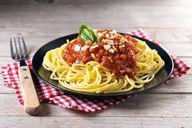

Back to Home
Spaghetti Bolognese

Description
Spaghetti Bolognese is one of the most beloved Italian dishes in the world. It features a rich, slow-cooked meat sauce served over a bed of perfectly cooked spaghetti.
Simple ingredients come together to create a deeply flavourful sauce that tastes like it has been cooking all day — because it has.
Ingredients
- 400g spaghetti
- 500g ground beef
- 1 onion, diced
- 3 cloves garlic, minced
- 2 carrots, finely diced
- 2 stalks celery, finely diced
- 2 cans crushed tomatoes (400g each)
- 2 tablespoons tomato paste
- 1 cup beef stock
- 1 teaspoon dried oregano
- 1 teaspoon dried basil
- Salt and pepper to taste
- Parmesan cheese for serving
- Fresh basil for garnish
Steps
- Heat olive oil in a large pan over medium heat. Sauté onion, garlic, carrots, and celery until soft.
- Add ground beef and cook until browned, breaking it up as it cooks.
- Stir in tomato paste and cook for 2 minutes.
- Add crushed tomatoes, beef stock, oregano, and basil. Season with salt and pepper.
- Reduce heat and simmer uncovered for 45 minutes, stirring occasionally.
- Cook spaghetti according to package instructions until al dente. Drain and set aside.
- Serve sauce over spaghetti and top with Parmesan and fresh basil.